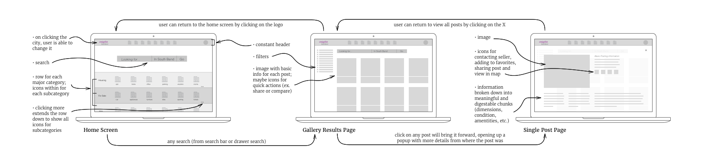
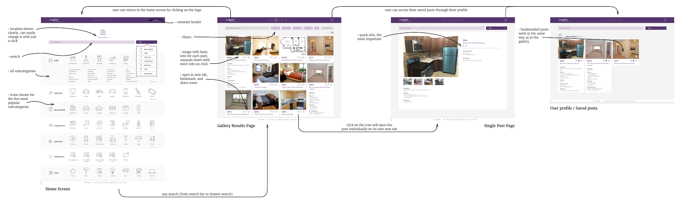
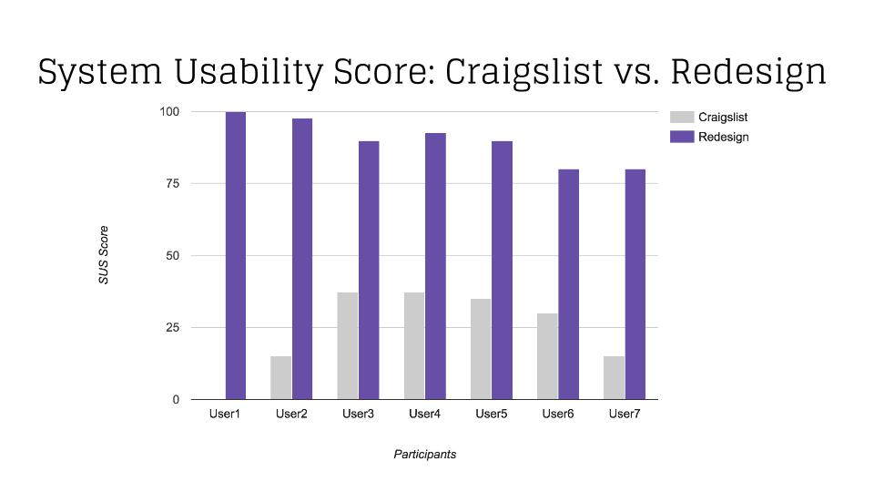
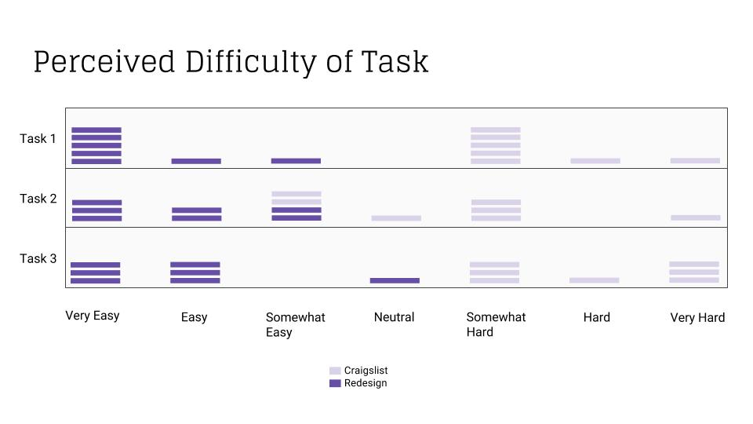
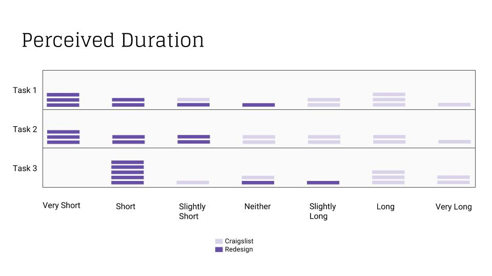
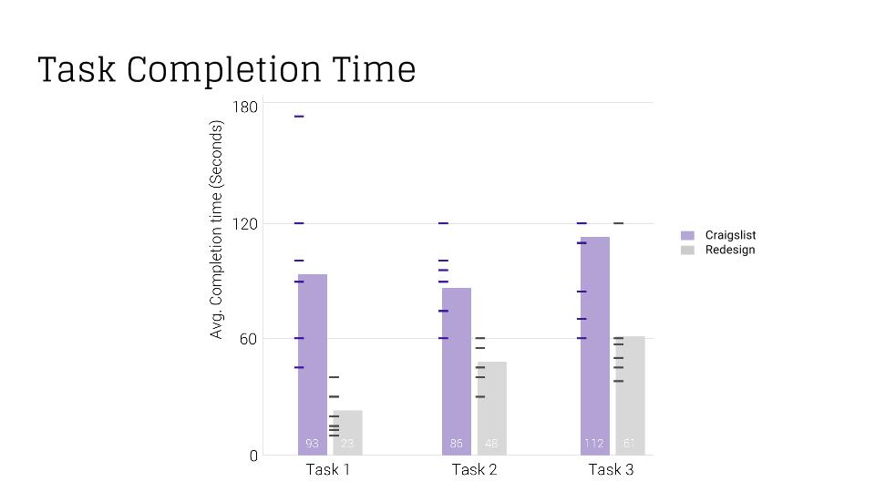

The goal was to maintain Craigslist's branding and intentions, while improving the usability of the website and and the user's experience in the process. Specifically to:
Declutter interface to be able to use Craigslist easily
Quickly sift through, find and compare items (improve search)
Address credibility and security issues facing users
TASKS:
1. Assessing the market:
Find min, max, and ~avg. price of apartments in South Bend, then return to home.
2. Finding contact details:
Search for an apartment filtering by 2 Bedrooms, and find 3 phone numbers to contact and write them down. Return to home.
3. Search in different city, save posts:
Change your city to Austin, TX. Look for bikes filtering by condition. Save a post for later. Access it.
FINDINGS:
1. Users felt overwhelmed interacting on Craigslist as they feel it is chaotic, and associated with dangerous encounters.
2. Lack of credibility keeps users from coming to Craigslist.
3. Photos are the primary way users select a post to click on.
Conducting task-specific interviews with our target users
02. Finding a solution.
- Initial wireframes for different design directions
Different design directions for the home screen
Chosen design direction - Results screen
Chosen design direction - Individual posting screen
and understanding the flow.

03. Putting it all together for research and gathering feedback.

Version 2
04. And is it better?
"The newer version was much more intuitive. The old version felt unnecessarily complicated and it was difficult to find what I was looking for quickly"
"The redesign was awesome, it even looks good. I'd much rather go to that one."
"I believe [the redesign] is more welcoming and consistent"
"The original has too many options for something so simple"

Comparison between original and redesign

Comparison between original and redesign

Comparison between original and redesign

Comparison between original and redesign
Skills and Lessons learned:
Conducting usability studies
Developing personas, use cases, and scenarioes
Conducting interviews, observations and surveys
Performing Heuristic Evaluations using Nielsen's Guidelines